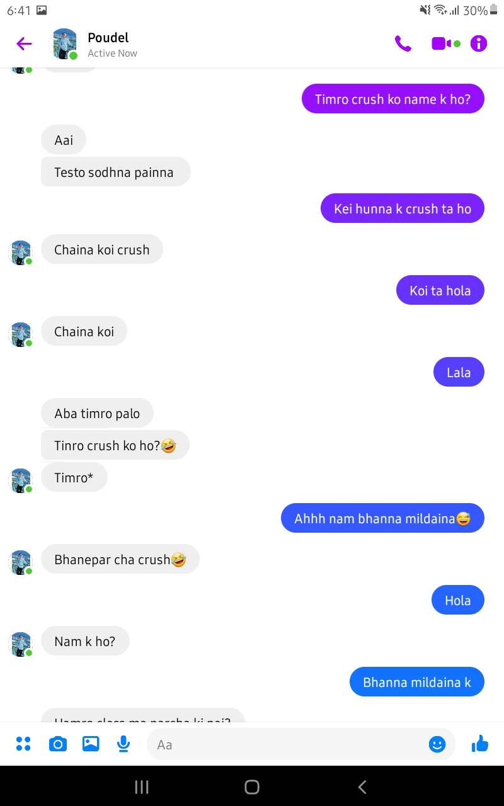

| Name: | My secret crush |
| Genre: | Romamce,Drama,slice of life,school life,Seinein |
| Author: | Sidant Chaturbedi |
| Based: | Prashant and Bibita |
| Status: | Ongoing |
| Published: | 29 May,2024 |
| Rating: | 5 stars |
A real life story based on the unexpected relationship of Prashant and Bibita. The story takes place 9 years in the furture where all friends gather at their wedding. At the wedding the tale of Prashant and Bibita is narrated by the author himself. What was the cause for their relation? How did Bibita rizz up Prashant? What kandas happened during class 9 and 10? Uncover everything till the end of this novel. Thanks !
I could hear the mantras the pandit was chanting, I could hear the fire as it was blazing when the pandit threw ghee on to it, I could hear the music in the background. The smell from the delicacies, especially the jerry made my mouth water up. I was enjoying and vibing to the music in the background. I was quite cheered by watching all was my friends going crazy on the song. I also joined them, we danced out hearts out. After being exhausted, we all sat down and ate to our hearts content.
After half an hour. Prijal calls us, he seemed in a hurry. It was quite obvious why he was in a hurry. we all knew and immediatly rose up from our seats.
"It's time.", Prijal shouted.
We all scurried towards the Mandap, to see our friend who was now very soon going to be the husband of another girl. We all were immersed in that moment. We were all happy for Prashant,our friend who was marrying Bibita.
Upon the happiness sparkling bright and wide, I could see the darkness that was lurking behind.
"How come the girl is taller than the boy?"
"Isn't it weird that the boy is so short."
I heard gossips about Prashant from some persons whom I had never even seen in life. I thought to myself that this world is so cruel that judges people based on their appearance. But at the same time my brain tried to ignore all these thoughts because these thoughts didn't matter. Not to me, neither to prashant. He was happy, probably the happiest at that moment.
Prashant and bibita completed their marriage. We all congratulated Prashant for his new journey. We all took a group picture with him. For us this was just a normal wedding ceremony but for Prashant this was completely life changing.
After an exhausting day of running and damcing, all of us friends sat down at the party hall. Prijal, the current commander of British Army brought us all drinks. We all were relaxed and sipping on our drinks. "Who knew the day would come when we attend the marriage of Prashant and Bibita." I said smiling and sipping the drink. "Haha! It's so true." replied Mahendra, a famous IT engeenier. Among all the laughter, Shumbham, the president of Japan who was Bibita's cousin brother and close friend of ours spurred with a question.
"How did popat and Bibita come into a relation? Didn't popat reject her?" Shubham questioned us with a bright and exicted fare. This question got all of us fired up. "Its a long story" said Ujjwal, an e-sports gamer and close friend of ours. "The story is a roller- coaster to be real. It has a lot of kandas. "
Shubham was even more curious now. "Tell me about it" said Shubham. "The whole night will pass." replied Ujjwal, Shubham felt a bit down hearing this. With another hope, Shubham turned towards me, "The night's still young, why don't you narrate it me? It's not like we have work tommorow, we can sleep the whole day." he said.
I smiled. Then with a giggle. I replied, "Yes, the night's still young. I will tell you the entire story but you must listen to all of it and in one sitting. Do you agree?"
"Yes, I agree. "Shubham replied eagerly without hesitation.
"Before that why don't you bring us all another drink?" I asked him.
"Come on, you alredy had a drink." replied shubham all frustated.
"Do you wanna hear the story or not?" I added coal to his burning fire of frustation.
"Fine" said Shubham and left to grab us all drinks.
Ujjal said to me, "Are you sure you wanna tell everything, its gonna be long before you complete."
I replied, "Yes I am aware but wouldn't it be a fun trip down the memory lane? The night is quite young and so are we, we all met together like this after so long, who knows when we will meet again."
Everyone seemed to agree with me. After a few minutes, Shubham arrived with all the drinks in his hand.
"Ok, now you have to tell me." Said Shubham huffing.
"OK OK.... Everyone, be ready to take a nostalgic trip.",I said.
I took of the blazer and the necktie I was wearing and got comfortable. Everyone else also started to get comfortable. With a sip of my drink and a sigh, I started the tale, the tale of two love birds that no one expected.
"The story starts around 12 years ago
........
It was a cold winter morning, so cold in fact that the sun ray's were covered in mist. Smoke was cominb out whenever someone breathed. The leaves of the trees all dried up, no birds in the sky, all animals hibernating. Winter really had a toll on everyone. Amongst the cold winter atmosphere there was a fire burning. A fire roaring through the heart of Bibita which kept her warm. It was the fire was of love.
Early in the morning, when everyone else was asleep, Bibita woke up from here bed, got ready for early morning coaching classes. She wrapped the scarf around her and walked along the dark and cold alleys that she had been always walking. She wasn't scared of these alleys. They were like a friend to her. Along the way her mind would be consumed by thoughts, thoughts of someone that kept her cold heart cosy.
She would reach the school building ahead of everyone, turn on the classroom lights and wait for someone, someone close to her heart who maintained her sanity.
It was a normal cold school day. Bibita was standing at the school balcony focusing on the road that was just below .She was waiting for Prashant. Even in the darkness, she easily recognized Prashant from far away. Just by looking at him, she felt a sense of comfort, she was immersed in him. She was in mad love with him. On the other side of the world, there was Prashant for whom Bibita was just a normal classmate. He had no interest in her.
"Then how did Prashant fall for her?" said Shubham very confused.
"Hold on, the story is just starting, there is a lot left. "I replied.
Shubham went back to comcentrating on the story.
I again started speaking,
"When you force something too much it becomes a reality."
This was the exact case for these two lovebirds.
English language has a flaw, the word 'like' simply means to adore something or someone. When glancing at this word, it might just seem like a word with a normal and simple meaning. It may indeed have a single meaning but sometimes the meaning can be quite different.
At this point, it was crystal clear that Bibita liked Prashant She saw him through the eyes which was immersed in him, which saw him like a prince of her dreams. In the same way, Prashant also liked Bibita. So, what was the problem ? Here, the word 'like' meant something else for these two. Bibita liked Prashant romantically whereas prashant liked Bibita mearly as a classmate only.
The English language has a flaw where it can't express the true feeling that are developed inside the heart. My Nepali teacher used to say,
"Inside the pages of the human heart there emerges many sensations which can't be expressed in just words. For those expressions to be expressed, we need poetry. Only a poet can express such feelings in words."
So, I wonder, if I had been a poet, how well could I have narrated this story.
There was system of rotation in our class. All the students revolved around the class in a complete cycle. All the girls sat on the left hand side of the classroom whereas all the boys sat on the right-hand side. At that time Prashant, me and prijal were benchmates. Similarly, Bibita and shreya were benchmates. Bibita always sat at the first whereas Prashant alway sat at the corner. Bibita would sit at the first seat solely for the reason of seeing Prashant. She would always glance at Prashant, whereas he would never even know about this. They were just opposite of each other but They didn't let their difference come in between their love.
It was a quite and normal day, it was sunny outside, so the temperature was in 20's and it felt warm. Classes were running as usual. Bibita was sitting in the class, full focused not on the teacher but on Prashant. She was staring at him whenever she got the change. She didn't pay a single bit of attention towards the class. She was drowning in the river of feelings. Fortunately she didn't suffocate in this river because it was not materialistic, it was just imaginary. She was in her own world where she dreamed about herself and Prashant. In her world they were married. They would sleep together under the same blanket. In the morning she would get up to make breakfast but Prashant would drag her down, hug her, kiss her on the forehead and say," come on its still so early, sleep with me more." She would then get embarrassed. She would cuddle with him for a bit and then furiously get out of the bed. She would shout at Prashant that he was going to be late at work. Ofcourse she would only be angry from the outside. She would make breakfast and eat it together with Prashant. Then Prashant would get ready for work, kiss her goodbye and head towards his work. Meanwhile She would tidy up the house, clean it, go to the market and prepare for dinner. Then Prashant would come back, she would welcome him, spend time with him, eat dinner together with him. And at last cuddle to sleep together with him. On the weekends they would go on dates. And on vacations they would go on trips. Bibita had daydreamed all sorts of things about Prashant.
Due to her over obsession with Prashant things beer began to leak out. Suspicions were raised that she had a crush on her. Now the main story had started to begin. A small ball of snow becomes a boulder when it rolls down a hill. This was the moment when that small snow ball started rolling.
Other students of our class started to realized that Bibita was obsessed with Prashant. Among those students I was also included. I kept quite about it but the others didn't.
Most of the others in the class were backbenchers who had no interest in studies and would make fun of unnecessary things just to entertain themselves. This thing about Prashant and Bibita, they were the first to shout about it.
The teased Bibita saying various things like, "Popat ko budi", "Popat ko maina", "Bibita Poudyal", etc etc. In the same way, they teased Prashant too. Bibita who although wanted to be together with Prashant couldn't tolerate this. Whenever anyone teased her, she would get furious and shout back at them. Similary even Prashant would oppose them and get a bit angry.
Later on, Bibita was teased lesser by the backbenchers. Eventually they got bored with it. But now we were on, our friend circle started to pick up the teasing. Unlike the backbenchers our teasing was wholesome and harmless.
One day, we were attending our classes like normal, I was on full concentration mode. Suddenly I feel a strong hand on my sholder. When I turned my torso to the side. I was pulled back more like I was leaned back. Prijal was the one who pulled me back. Out of confusion I asked him, "Why are you pulling me back?"
With a evil grin on his face, he replied. "Don't block the view. let her enjoy the view."
At first. I was so confused, but when I looked towards the girl side, I Saw Bibita looking directly Prashant with an eye full of obsession. When we looked he at her, she became red like a tomato and immediately looked away.
Basically, what was happening is that Bibita was looking at Prashant. Since he is in the corner seat she wasn't able to see him properly. So Prijal and I moved away so that the view was clear.We had now found a harmless and fun way of that we did throughout school life.
At first, Prashant was not happy and would get angry when we did this. But we had lots of laugh from this harmless prank.
These are the small moments that highlight school life for me. The fun memories and laughs we had, they are the true meaning of life. Sadly. our school life is over and so are "those" laughs.
Due to our pranks Prashant and Bibita got a chance to be a bit closer, they would chat in messanger, exchange notes and reels. Slowly, Bibita began to get more closer to him and finally one day she gathered the courage to.....confess.
"So that was how they become a couple. It's not so epic as you said",Said Shubham. We were still at the party hall of Prashant and Bibita's wedding. The bright moon was gently. peaking through the clouds like it was attending the wedding uninvited. The party was still lively and so were we.
"That just the first chapter we still have a lot left." I continued
- The day of proposal (PD)
It was saturday, the day off where all the students relax and chill. Both Prashant and Bibita were inside their houses and scrolling through their phone. Prashant was simply through insta and so was Bibita. The only difference was that Prashant was scrolling through reels whereas Bibita was scrolling through Prashant's profile, looking through all his stories, all his pictures and enjoying it to the fullest.
After sometimes a message pops up in prashant's phone, it was frome Bibita. She had sent a message. Prashant being a kind gentleman he opened the message and replied to it. After that their conversation started to pick up.The conversation is as follows:-
(I managed to get the actual leak photos of their conversation. The screenshots are from Bibita's phone.)

hearing this Bibita turned off her phone and threw it away. Her heart was shattered into pieces The one she adored, the one she longed for rejected her. This rejection left a deep scar on Bibita's heart. She cried alone locked up inside her room. The was only thing that gave her company was the pillow on her bed, on which she cried her heart out That was the pillow which held her scream, tear and sadness. After a brutal hour of horror, Bibita was finally composed. Her eyes were swollen and the pillow was all wet.
This was the moment she decided she would change, she made the decision to move on, she aimed for something better, something revolutionary, something legendary. She made a new crush and it was.....
Thanks a lot for reading. I will try and add more novels. Bookmark this site for more new novels.
links:
"To the top"